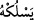
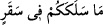

oluşundan ve Araplar arasındaki değerinden dolayıdır. Mâdem ki hayatın aslı sudur, o
hâlde Allah Teâlâ onu bollaştırmıştır.
Hz. Ömer (r.a.) şöyle der: “Nerede su varsa orada ot olur, nerede ot varsa orada mal
olur, nerede mal varsa orada fitne olur.”
Bu durumda mânâ şöyledir: Onlar doğru yolda gitselerdi, biz onlara dünyada çok mal,
rahat bir hayat ve bol rızık verirdik.
Farsça ifâde edecek olursak; “Elbette onlara kıtlık senesinden sonra bol su verirdik,
yâni rızıklarını genişletirdik.”
Bu âyet-i kerîme bize gösteriyor ki cinler yerler, içerler fakat yemeleri ve içmeleri
konusunda ayrıntılı hükümler vardır. Bunlar tefsirimizde daha önce geçmişti.
Mârifet ehli birisi şöyle der: Âyette yer alan “doğru yolda gitmek” ifâdesiyle
kasdedilen, Peygamber (s.a.) Efendimiz’in sünneti üzere hareket etmek ve sâlih
kimselere meyletmektir. “İskâ” kelimesiyle kasdedilen ise onların kalplerine muhabbet
suyunun bol bol akıtılmasıdır.
“Onları bu hususta imtihan edelim diye.” Yâni nasıl şükredeceklerini ortaya
çıkarmak için bol su verme ve hayatı genişletme konusunda onları imtihân edelim diye.
Tıpkı “Belki dönerler diye onları iyilik ve kötülüklerle imtihan ettik.” (el-A’raf,
7/168) âyet-i kerîmesinde olduğu gibidir.
Veya “onları su ve mâl husûsunda imtihan edelim diye…” Bu iki mânâ da aynı kapıya
çıkar.
Kâşifî demiştir ki; onları bu hayatta, şükür vazifelerini nasıl yaptıkları konusunda
imtihan ederiz.
Bu âyet-i kerîmede rûhânî rızıkla rızıklanan, mânevî gıdâ ile gıdâlanan kimsenin de bu
almış olduğu rızka ve gıdâya şükretmesi gerektiğine dâir işâretler görüyoruz. Mânevî
rızık ve gıdâ alanların bu şükürleri; çeşitli itâat, ibâdet ve birçok hizmetler sunmakla
olacaktır.
“Kim Rabbinin zikrinden”, O’na ibâdetten veya O’nun verdiği öğütten ya da O’nun
vahyinden “yüz çevirirse Rabbin onu çetin” çok zor “bir azâba sokar.” Bu azap, azap
görene öyle baskın, öyle gâlip gelir ki kişi o azâba asla dayanamaz.
Bu âyette “azâb” kelimesi bir masdarla “saaden” şeklinde vasfedilmektedir.
Kelimenin masdarla vasfedilmesi mübâlağa ifâde eder, mânâya kuvvet katar.
“
/Yeslukhu/onu sokar.” Arapça’da “
/iğneye iplik taktım” ifâdesi
“seleke” ile kullanılır. Yâni kim Rabbinin zikrinden yüz çevirirse Cenâb-ı Hak onu
çetin bir azâbın içine koyar. Diğer bir âyet-i kerîmede aynı kelime kullanılarak şöyle
buyrulur: “
/Sizi şu yakıcı ateşe sokan nedir?” (el-Müddessir, 74/42) Cin
Sûresi’ndeki âyette harf-i cerr hazfedilmiş ve mef’ûl fiile bitiştirilmiştir.
Kişinin hak yoldan yüz çevirmesi, bu yolu “tasdik etmemek, buna inanmamak”
şeklinde ise çekecek olduğu azâbı ebedî olacaktır. Böyle değilse ve mağfiret de
olunmamışsa o zaman işlediği cürüm kadar olacaktır.